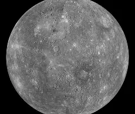
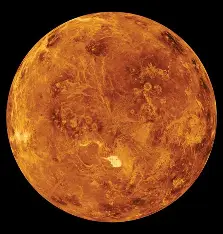
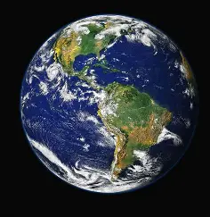
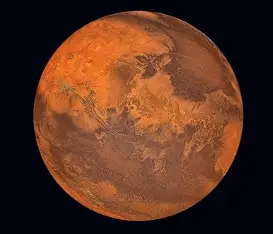
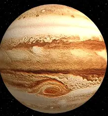
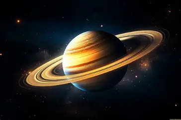
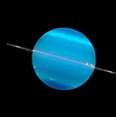
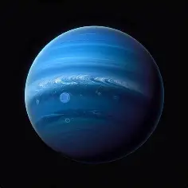

Names and characteristics of planets

Mercury
Mercury is gray, the smallest planet in the Solar System, and the closest to the Sun. Its diameter is about 4,879 km, and its average temperature is 167°C.

Venus
Venus, called the “Morning Star,” is yellowish-white. It is the hottest planet in the Solar System, with a diameter of about 12,104 km and an average temperature of 470°C.

Earth
Earth is blue and green, the only planet that can support human life. Its diameter is about 4,890 km, and its average temperature is 15°C.

Mars
Mars, known as the “Red Planet,” has a reddish color. Its diameter is about 6,790 km, and its average temperature is -65°C.

Jupiter
Jupiter is orange and white, the largest planet in the Solar System. Its diameter is about 142,985 km, and its average temperature is -110°C.

Saturn
Saturn is pale yellow and has the most visible rings. Its diameter is about 120,536 km, and its average temperature is -140°C.

Uranus
Uranus is light blue, the coldest planet in the Solar System, and it rotates on its side. Its diameter is about 51,120 km, and its average temperature is -195°C.

Neptune
Neptune is dark blue, often called the twin of Uranus. Its diameter is about 48,530 km, and its average temperature is -200°C.